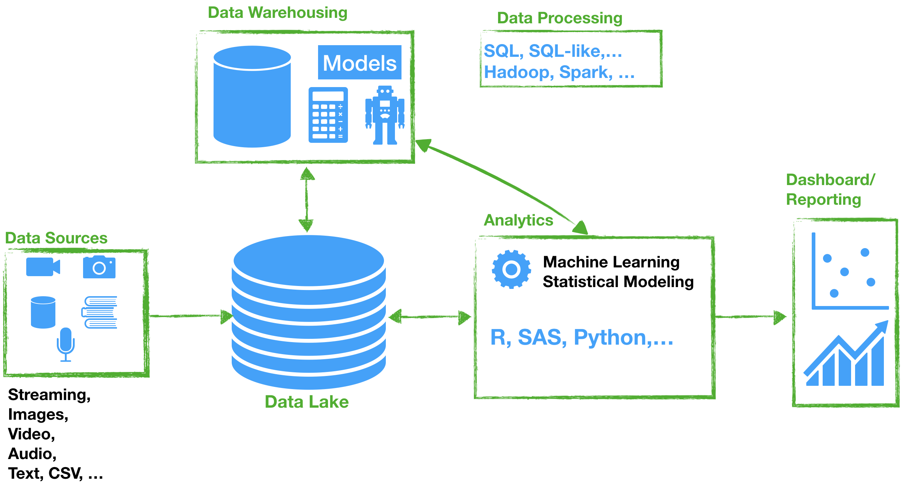

SQL Basics
At the end of this week, you will be able to:
- Identify Structured Query Language queries
- Write your first SQL queries
Let’s start with defining the basics.
Database
A database is an organized collection of data stored and accessed electronically from a computer system. A Database Management System (DBMS) is a software that is used to manage databases.

In order to work with data that are stored in databases we need a language. SQL is a standard computer language for relational database management systems (RDBMS). It is used for storing, manipulating and retrieving data in databases.
SQL has various dialects such as PL/SQL (Oracle), T-SQL (Microsoft), and others.
In this course, we will use SQL Server Management Studio hosted at UWF servers. We will use the fictional company Adventure Works data.
Information about accessing the SQL Server is posted on Canvas.
Basic concepts
When dealing with databases we will need to know what is:
Entity: is any thing the data represents in a database. For example,
Students,Employees,Schools,Departments, etc. There are given as tables.Data Type: We need to pick a data type for each column when creating a table. There are common data types including
INTEGER,FLOAT,CURRENCY,DATE,BOOLEAN, and etc.Data Definition Language (DDL): DDL commands are used to create or modify database structures.
CREATE,ALTER, andDROPare examples of DDL commands.Data Manipulation Language (DML): DML commands are used to insert, retrieve, or modify data.
INSERT,DELETE, andUPDATEare examples of DML commands.Data Control Language (DCL): DCL commands are used to create rights and permission.
GRANTandREVOKEare examples of DCL commands.Query: Data scientists use a query to get data or information from database tables.
Data Language
Now that we have access to SQL server system, we are ready to manipulate some data and execute SQL queries. SQL statements are divided into 3 categories: DDL, DML, and DCL. We can execute SQL queries using SQL Command or using Graphic User Interface (GUI). We shall present next common statements for DDL and DML.
Data Definition Language (DDL)
The DDL statements are used to create databases and tables. Here is a list of some of the statements:
- SQL commands to create a database:
CREATE DATABASEdatabase_name;
- SQL commands to delete a database:
DROP DATABASEdatabase_name;
⚠️ be very careful to drop databases or tables!
- SQL commands to create a Table:
CREATE TABLEtable_name;
- SQL commands to create a Table from an existing table:
SELECT... INTOtable_name
FROM Orginal_table
- SQL commands to drop a Table:
DROP TABLEtable_name;
- SQL commands to truncating (remove all records from a table) a Table:
TRUNCATE TABLEtable_name;
Data Maniplulation Language (DML)
The DDL statements are used to insert data, update records, and delete records. Data Manipulation Language is used to manipulate data. Here is a list of the main statements:
- SQL commands to insert one or more records into a Table:
INSERT INTOtable_name(col1,col2,...)
VALUES(exp1,exp2,...);
INSERT INTOtable_name
VALUES(exp1,exp2,...);
⚠️ Make sure you insert data in the same order as that in the table for the second syntax.
- SQL commands to select records from one or more Tables:
SELECTcolumn(s)
FROMtables
WHEREconditions (optional)
ORDER BY column(s)ASC | DESC; (optional)
DISTINCTclause to eliminate duplicates:
SELECT DISTINCTcolumn_name
FROMtable_name;
WHEREclause to filter if the condition is true:
SELECTcolumn(s)
FROMtable_name
WHEREconditions;
- Arithmetic operators
SELECTcolumn_name1, column_name2, column_name2*2 AS 'twicecolumn2'
FROMtable_name;
Basic arithmetic operators include: %modulo, /division, *multiplication, +addition, and -substraction.
Basic comparison operators include: =equal to, <>not equal to, >greater than, >=greater than equal to, and more.
Basic condition operators include: ANDall conditions must be true to get true, ORAny one of the conditions must be true to get true, INtest if an expression matches any value in a list of VALUES, BETWEENcheck if an experession is within a range of VALUES, and more.
ORDER BYclause to sort the records:
SELECTcolumn(s)
FROMtable_name
WHEREconditions
ORDER BYexpression (by default ASC);
UPDATEstatement to update records:
UPDATEtable
SETcol1 = value1, col2 = value2, ...
WHEREconditions [optional];
DELETEstatement to delete records:
DELETE FROMtable
WHEREconditions [optional];
Functions and GROUP BY
Often you will be asked to answer questions that involve writing queries for summaries using aggregate function and GROUP BY clause.
- SQL commands for Aggregate statements:
SELECT Aggregate Functioncolumn_name
FROMtable_name;
Below are the main aggregate functions:
| Function | Action |
|---|---|
AVG() |
average values |
COUNT() |
count the number of rows in a table |
MAX() |
select the highest value select the latest date select the last record for a character |
MIN() |
select the lowest value select the earliest date select the first record for a character |
SUM() |
return the total for a numeric column |
ROUND() |
round a number to specific decimal |
In addition to aggregate functions, there are other type of functions:
-The number functions take a numeric as an input and return a numeric value. The common number functions include CEILING(), FLOOR(), %, POWER(m,n) [\(m^n\)], SQRT(), and ROUND().
-The string functions. The common string functions include CONCAT(), LEFT(), LEN(), LOWER(), REPLACE(), RIGHT(), UPPER(), and SUBSTRING().
-The Date and Time functions. The common date and time functions include CURRENT_TIMESTAMP(), DATEADD(), DATEPART(), GETDATE(), DATEDIFF(), and SYSDATETIME().
-The Conversion functions. The common conversion functions include CAST() and CONVERT().
- GROUP BY and HAVING Clause:
The GROUP BY statement is used to group data from a column. HAVING clause is used with a GROUP BY to add conditions on groups.
SELECT Aggregate Functioncolumn_name
FROMtable_name
WHEREconditions - optional
GROUP BYcolumn_name
HAVINGconditions - optional
ORDER BYcolumn(s) [ASC | DESC] - optional;
🛎 🎙️ Recordings on Canvas will cover more details and examples! Have fun learning and coding 😃! Let me know how I can help!
📚 👈 Assignments - SQL basics
Instructions are posted on Canvas.